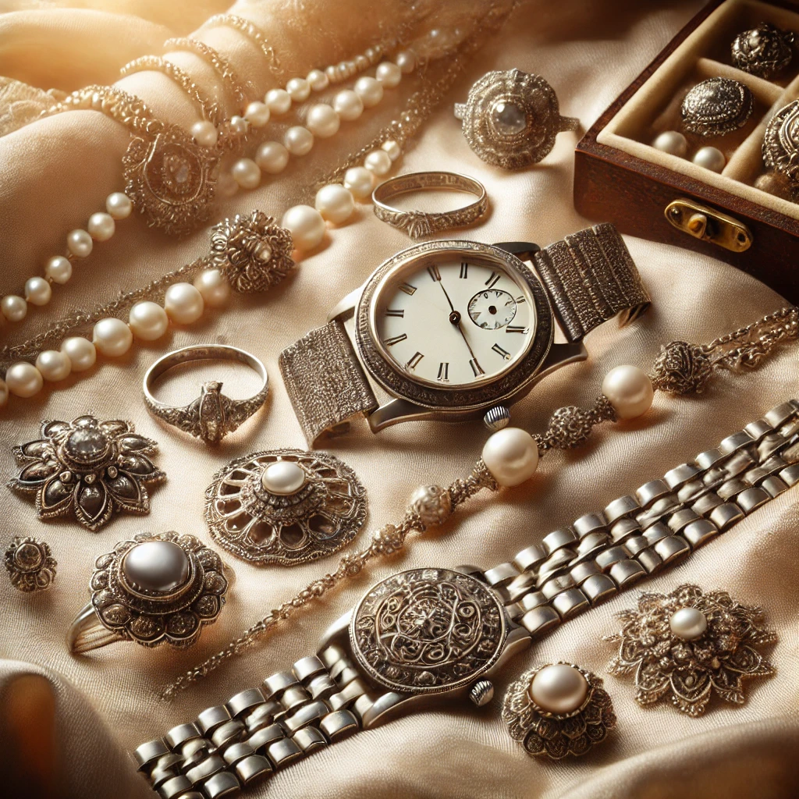

Varför Ädelt?
- Säkert: Vi verifierar varje smycke noggrant för att garantera att du får en äkta produkt.
- Hållbart: Genom återanvändning minskar vi avfall och bevarar naturresurser.
- Lätt att sälja: Vår plattform gör det enkelt att sälja dina smycken med en smidig process.